Desarrollo Django
1. Autenticación y Autorización
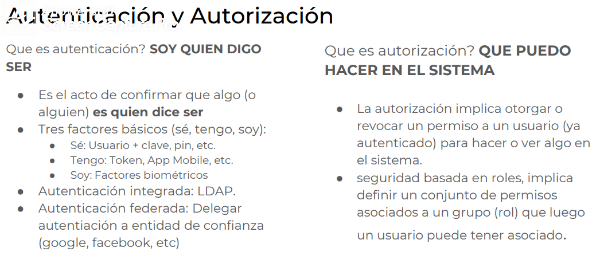
Autenticación -> Quien soy your
Se, tengo, soy factores básic os.
Autorización -> Que puedo hacer
2. ¿Qué es Django Authentication?
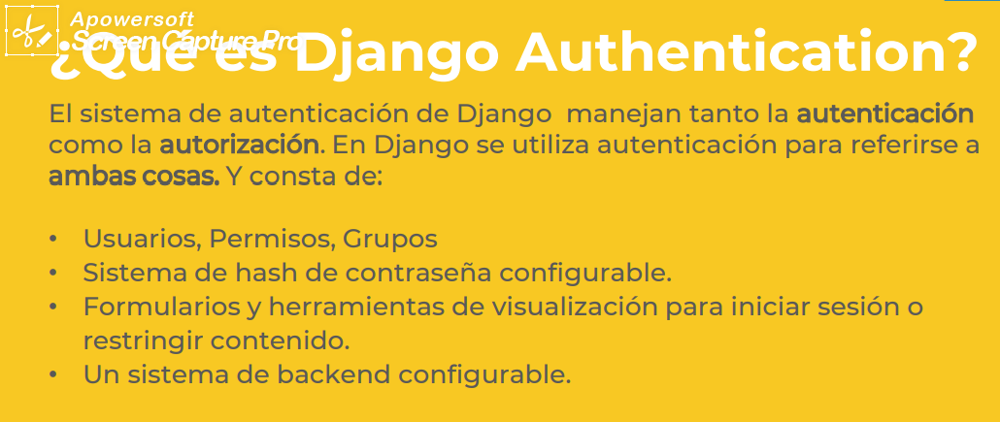
Autentica y autoriza, django auth.
3. Configuración
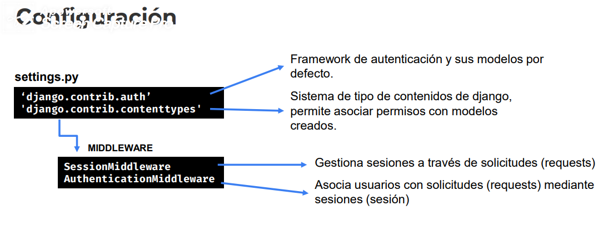
4. Objeto User
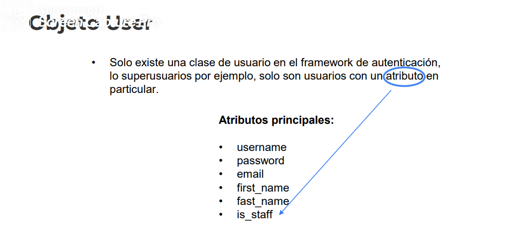
Con sus respectivos atributos
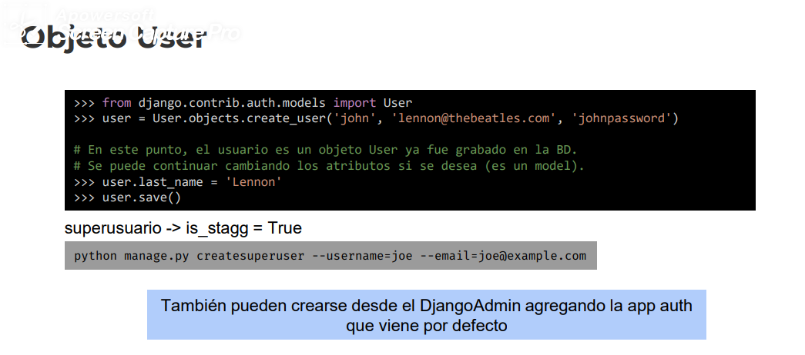
Usamos el manager -> .objects
is_staff -> si está en un True, entrá al Django Admin
5. Contraseñas
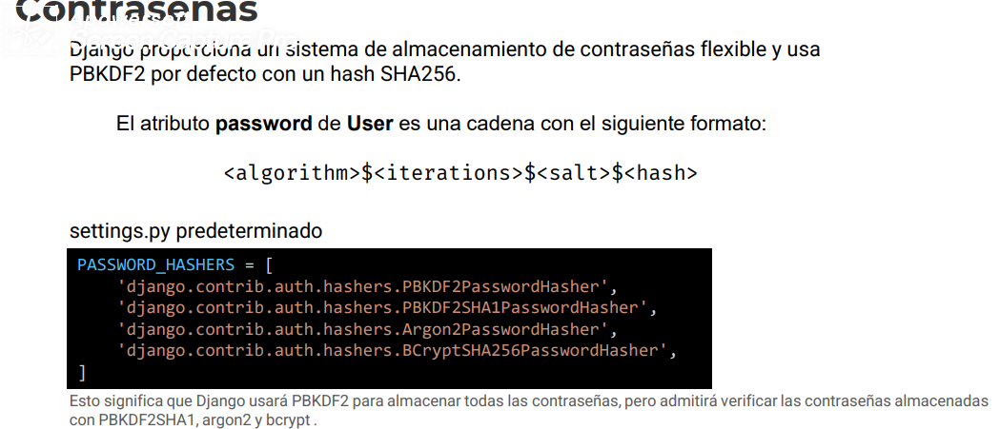
Las constraseñas cuando se ingresan, se hashean..
El hash que se encuentra en la base de datos.. Es comparado con el hash creado al momento de iniciar sesión.
Si son iguales, está okey.. Todo esto es configurable
6. Autenticando usuarios
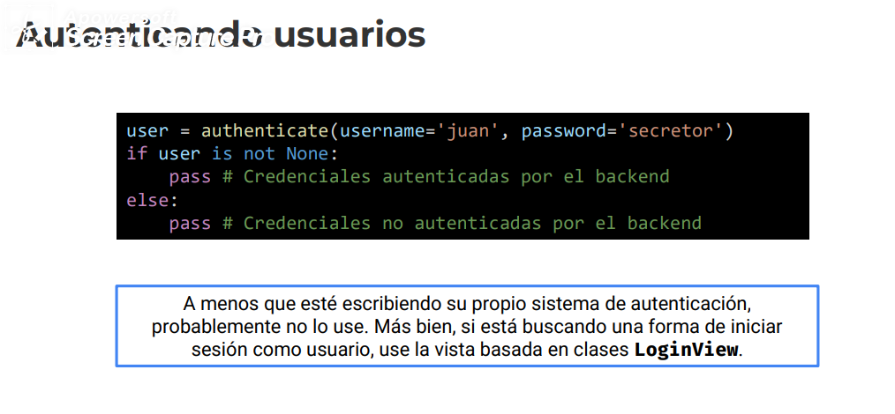
Autenticar no quiere decir loguearse.. Autenticar es Validar si es correcto el usuario y contraseña.
Loguearse es guardar el usuario y la contraseña en la sesión,
7. Permisos y Autorización
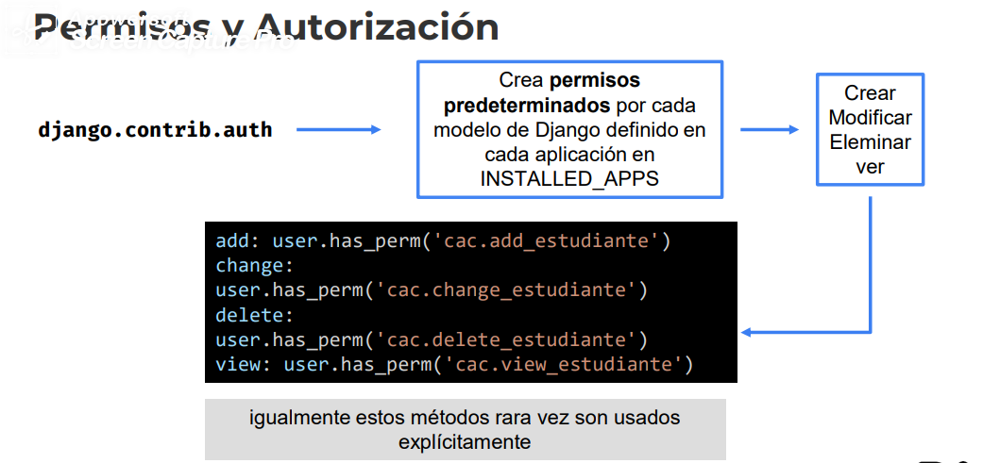
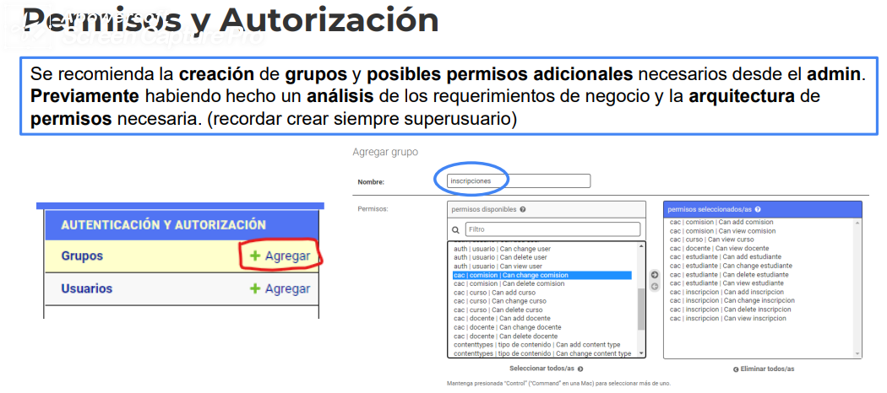
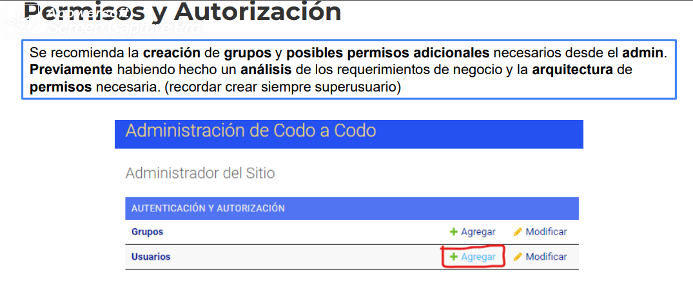
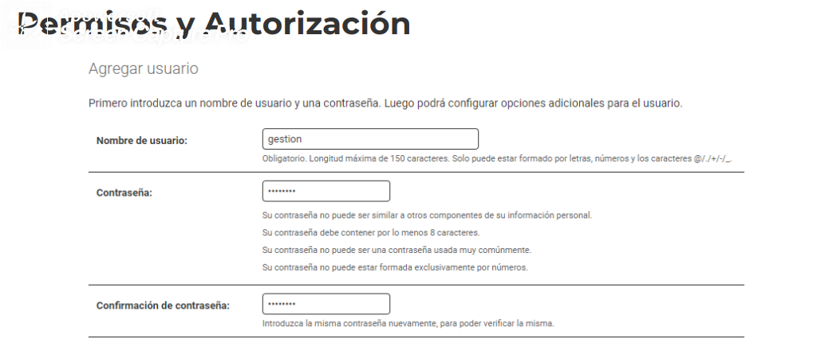
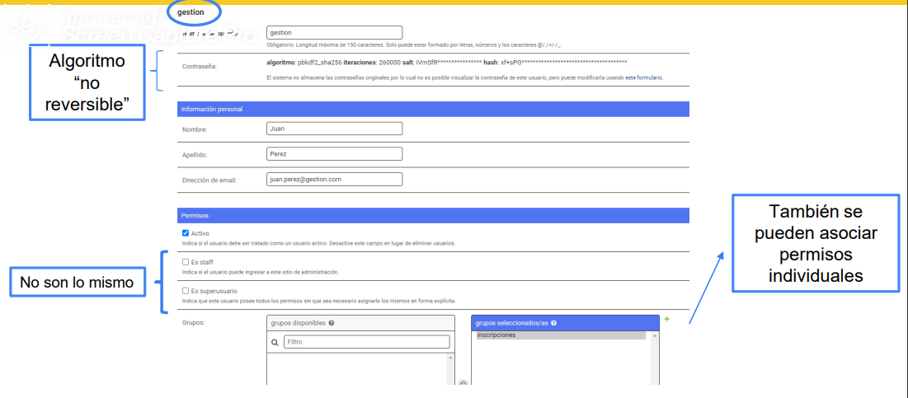
El form para agregar usuario, se puede usar también en el Front.
8. Iniciar y cerrar sesión en un usuario
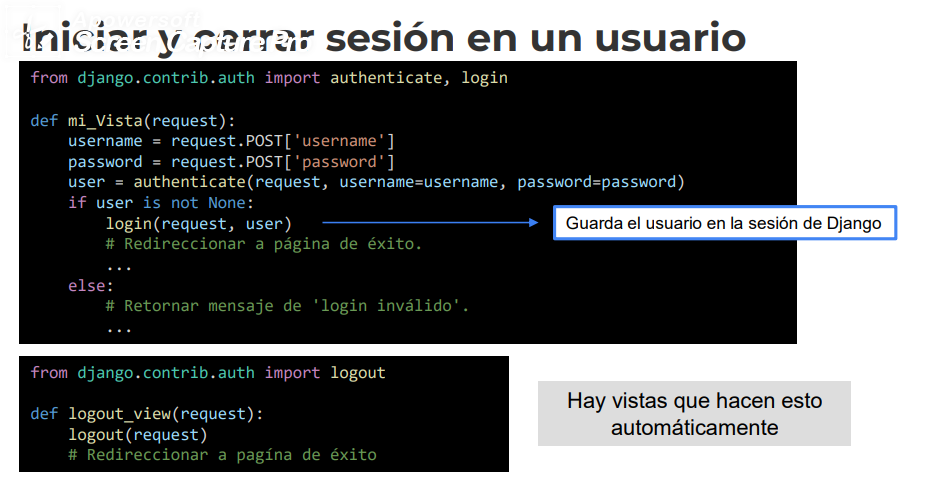
Acá vemos la diferencia entre autenticar y loguear.. Con el login, le pasamos el request y el user.
Con el logout(request) deslogueamos al usuario.
9. Limitar acceso a usuarios registrados en vistas
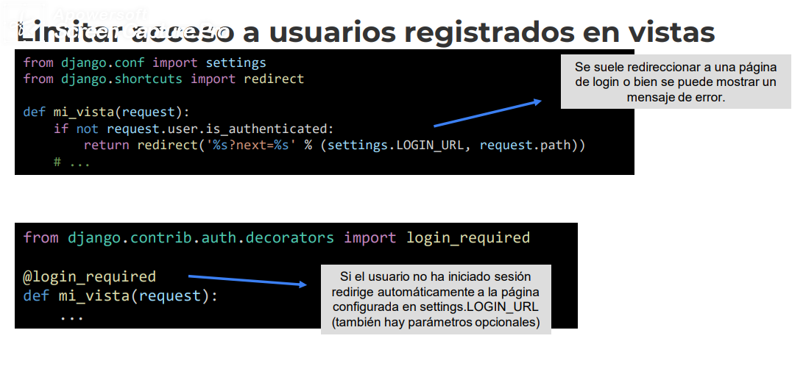
10. Limitar acceso a usuarios registrados en vistas basadas en clases
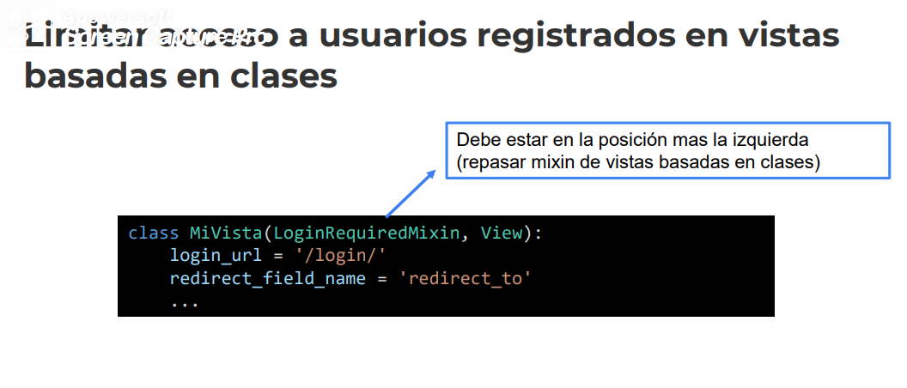
11. Limitar acceso a vistas basadas según permisos
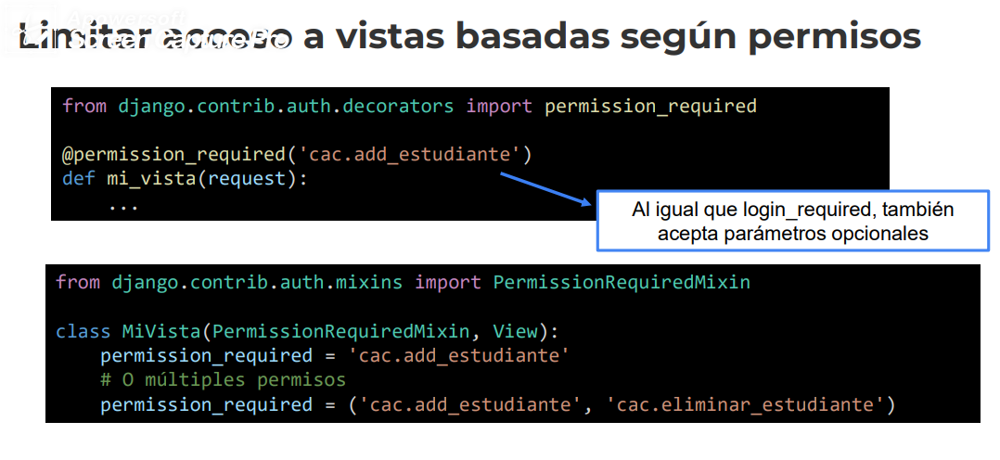
También podemos hacerlo desde el template y desde la vista..
12. Limitar acceso a usuarios registrados en templates
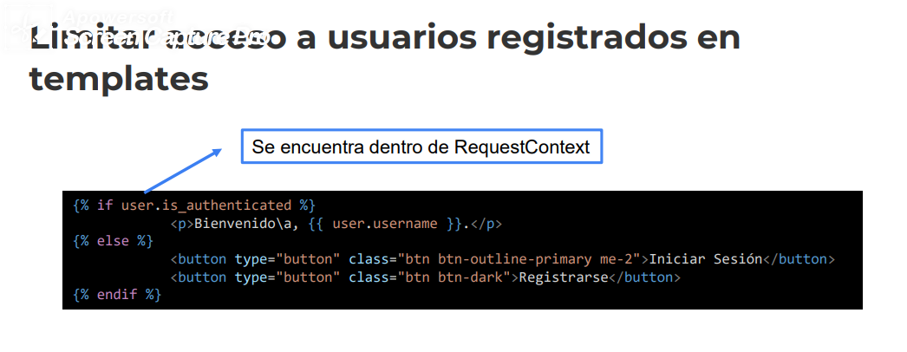
13. Limitar acceso a permisos en templates
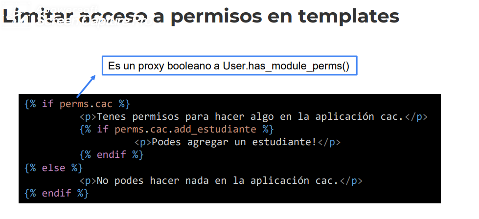
----------------------- Ejemplo práctico
En el settings.py..
INSTALLED_APPS = [
#'django.contrib.admin', # Utiliza el autodiscover para obtener el admin de todas las aplicaciones en "INSTALLED_APPS"
'django.contrib.admin.apps.SimpleAdminConfig', # No utiliza el autodiscover se debe hacer todo a mano"
'django.contrib.auth', -> Corroboramos el auth
'django.contrib.contenttypes',
'django.contrib.sessions',
'django.contrib.messages',
'django.contrib.staticfiles',
'django_extensions',
'cac' -> Nuestra app
]
--- En el html, index.. Mostramos o no los usuarios.
{% if user.Is_authenticated %} -> De esta manera debajo mostramos toda la data necesaria.
--- Ahora desde la views.py
from django.contrib.auth import authenticate, login, logout
def cac_login(request):
if request.method == 'POST':
# AuthenticationForm_can_also_be_used__
username = request.POST['username']
password = request.POST['password']
user = authenticate(request, username=username, password=password) -> Con el authenticate
if user is not None:
form = login(request, user)
messages.success(request, f' Bienvenido/a {username} !!')
return redirect('inicio')
else:
messages.error(request, f'Cuenta o password incorrecto, realice el login correctamente')
form = AuthenticationForm()
return render(request, 'cac/publica/login.html', {'form': form, 'title': 'Log in'})
--- Ahora desde la urls.py configuramos el logout..
path('cuentas/logout/',
auth_views.LogoutView.as_view(template_name='cac/publica/index.html'), name='logout'),
--- Ahora desde la urls.py configuramos el login y register.. Basado en vista en clase.
path('', views.index, name='inicio'),
# path('accounts/', include('django.contrib.auth.urls')),
path('cuentas/registrarse', views.cac_registrarse, name='registrarse'),
path('cuentas/login', views.cac_login, name='login'),
14. Configurar urls de autenticación por defecto
Usaremos vistas basadas en clase.. Es más sencillo para sobreescribir algo.
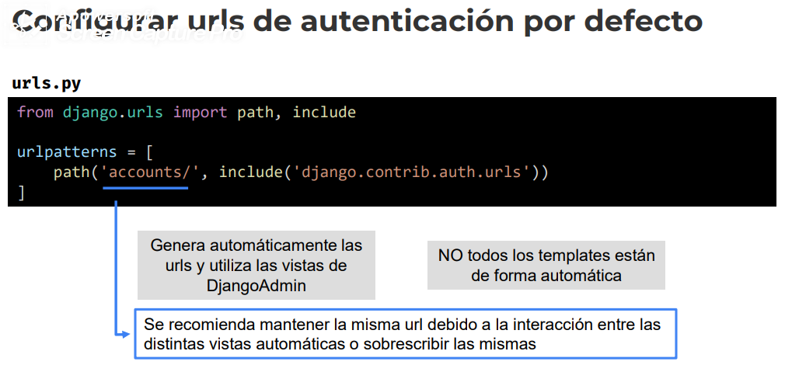
Si registramos la url accounts/ nos provee todo de manera automática, menos el register..
accounts/login -> De esta manera manejamos de manera automática y están relacionadas
accounts/logout
15. Urls y nombres generados por defecto
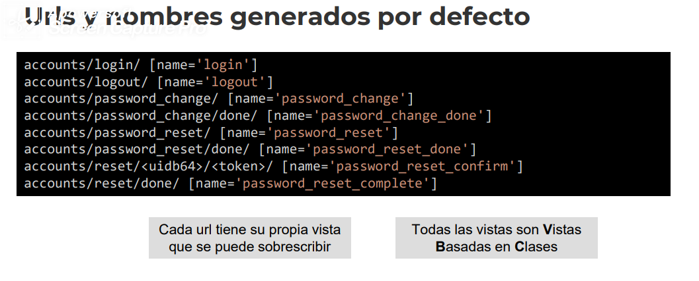
Estas son generedas de manera automáticas.. VBC -> Vistas basadas en clases.
* De esta manera, también podemos configurar el reseto de password..
Con tan poco se puede crear mucho.
16. Vistas de autenticación
La de Login -> la loginView, tiene atributos y responsabilidades.
redirect_field_name -> Redireccion de la pagina
template_name -> indica en que lugar estará el login.html
--- Ejemplo práctico
En el urls.py... Vemos las urls de las accounts..
urlpatterns = [
# accounts/login/ [name='login']
# accounts/logout/ [name='logout']
# accounts/password_change/ [name='password_change'] -> Podemos elegir cual agregar y cual no
# accounts/password_change/done/ [name='password_change_done']
# accounts/password_reset/ [name='password_reset']
# accounts/password_reset/done/ [name='password_reset_done']
# accounts/reset/< uidb64>/< token>/ [name='password_reset_confirm']
# accounts/reset/done/ [name='password_reset_complete']
path('accounts/password_change/', auth_views.PasswordChangeView.as_view(success_url="/"), name='password_change'),
path('accounts/registrarse', views.cac_registrarse, name='registrarse'),
# path('accounts/login', auth_views.LoginView.as_view(template_name="cac/publica/login.html"), name='login'),
path('accounts/', include('django.contrib.auth.urls')),
# path('cuentas/login', views.cac_login, name='login'),
--- Le indicamos en el settings.py
# REGISTRATION
LOGIN_REDIRECT_URL = "inicio" -> Donde redirigimos después del login y el logout
LOGOUT_REDIRECT_URL = "inicio" -> Le indicamos el nombre del path de la url
Que es esta:
path('', views.index, name='inicio')
--- Debemos agregar la carpeta dentro del templates llamado "registration" y el login.html
Si no existe, lo generamos.. Si existe lo sobrescribimos
El template se hará de acuerdo a lo sugerido por Django
path('accounts/', include('django.contrib.auth.urls')), -> Al incluir los templates por defecto, irá a buscar esa plantilla en específico
Al poner el login.html que es el archivo base.
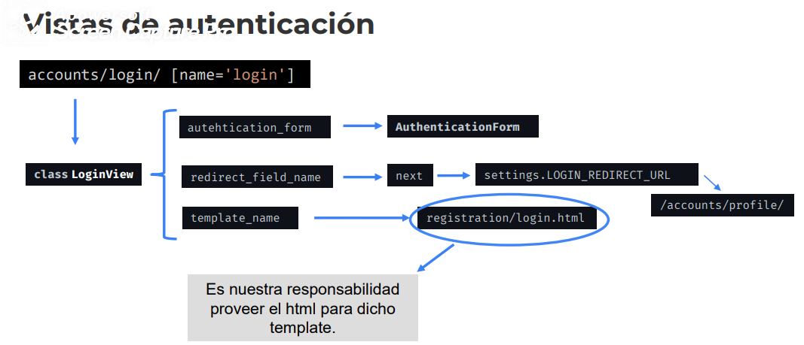
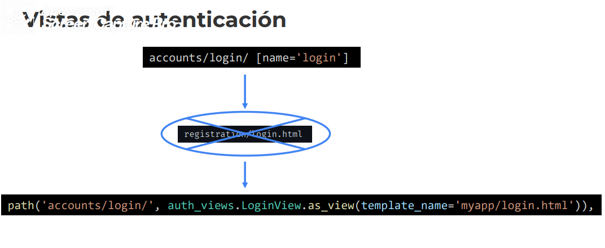
--- O bien podemos una especificamente, no de manera general como la anterior.
# path('accounts/login', auth_views.LoginView.as_view(template_name="cac/publica/login.html"), name='login'),
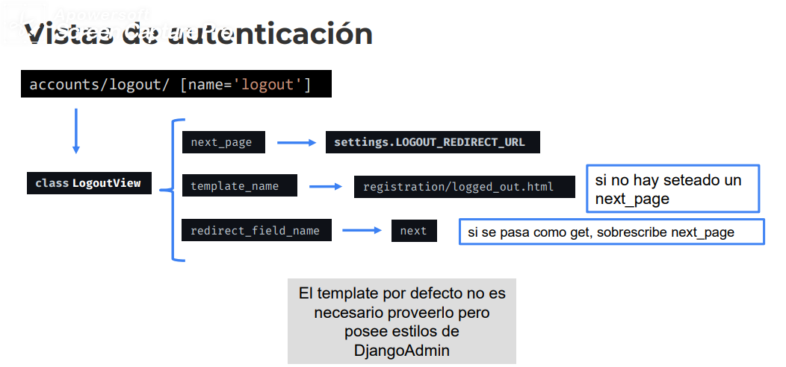
Luego vemos el logout.. Va a una vista, saca de sesión al usuario.
* Podemos usar el cambio de contraseña por defecto, usando la plantilla por defecto Django..
Con pocas líneas tenemos toda la autenticación por defecto.
17. Extendiendo el Usuario
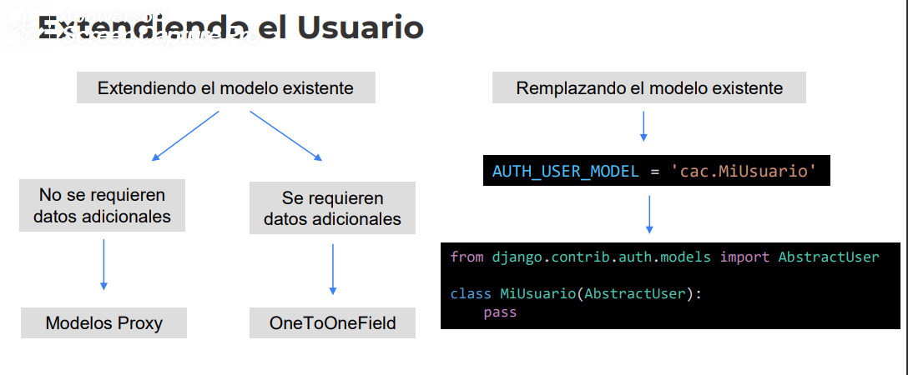
2 maneras, generalmente se extiende el modelo existente..
El perfil de visualización, datos extras, es uno a uno con el usuario.. EL usuario maneja la autenticación.
Para abstraer el User, podemos agregarle nuevas propiedades o funcionalidades..
Usando el nuevo modelo.
-----------------------
De esta manera exigimos el login..
# @login_required
# def mi_vista(request):
# ...
O bien extendemos del login en la vista base en clases..
# from django.contrib.auth.mixins import LoginRequiredMixin
# class MiVista(LoginRequiredMixin, View):
# login_url = '/login/'
# redirect_field_name = 'redirect_to'